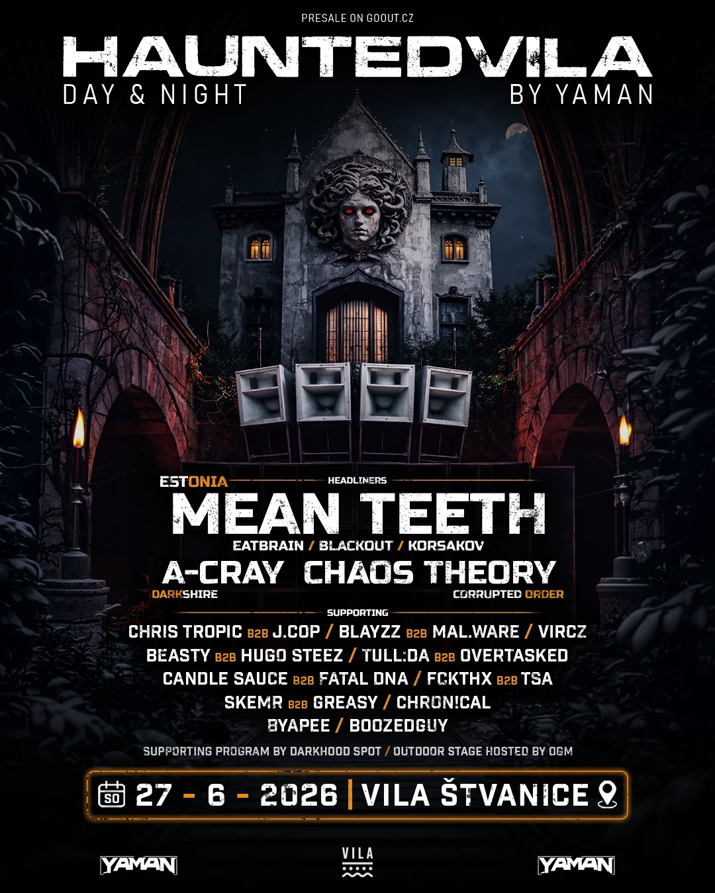
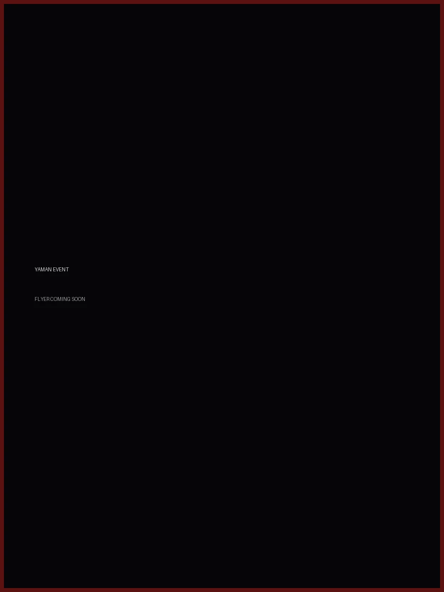

HAUNTEDVILA BY YAMAN I
Temná YAMAN událost propojující neurofunk, underground bass music a industriální atmosféru. A dark YAMAN event combining neurofunk, underground bass music and industrial atmosphere.
Events
YAMAN Events propojuje pečlivě vybírané prostory, temnou rave atmosféru a hutný zvuk DNB do jedné moderní neurofunkové experience. YAMAN Events connects carefully selected venues, dark rave atmosphere and heavy DNB sound into one modern neurofunk experience.

Temná YAMAN událost propojující neurofunk, underground bass music a industriální atmosféru. A dark YAMAN event combining neurofunk, underground bass music and industrial atmosphere.

Další underground YAMAN událost. Flyer a detaily budou doplněny. Another underground YAMAN event. Flyer and details will be added soon.